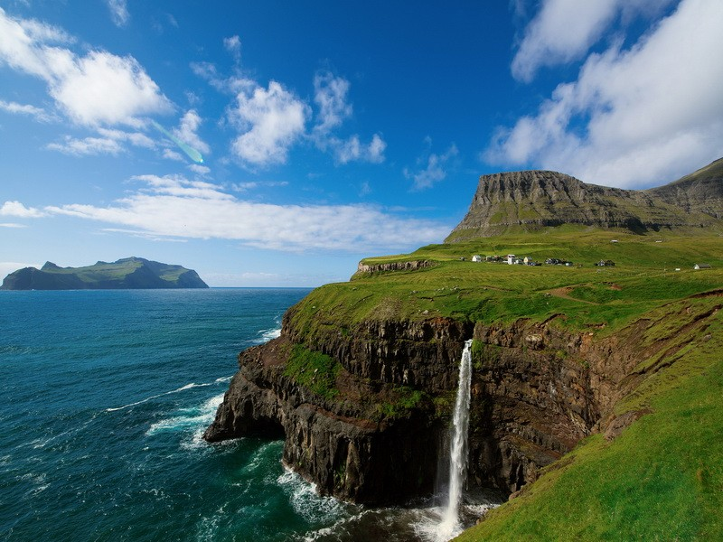
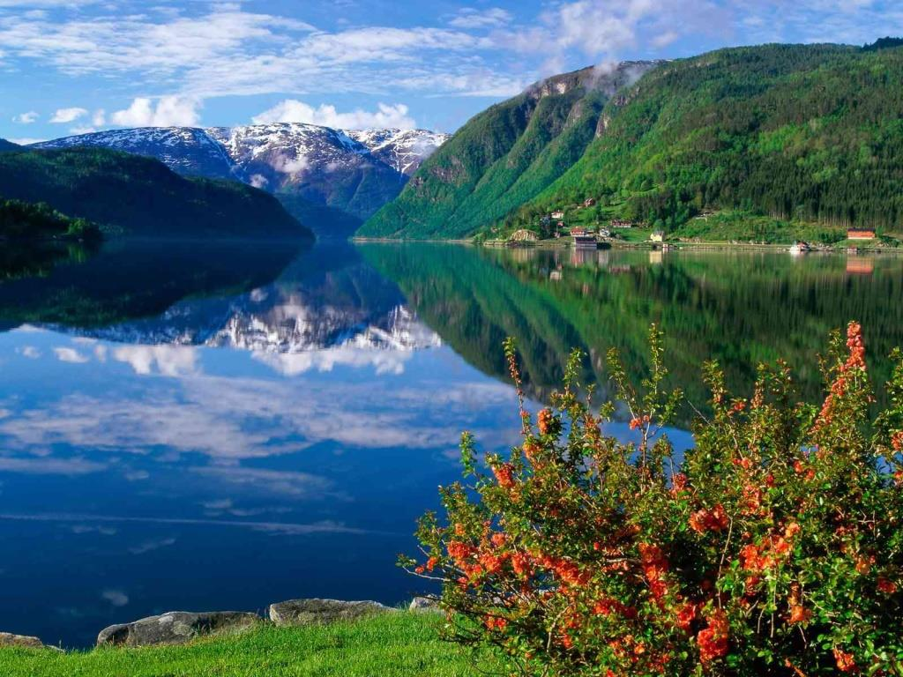
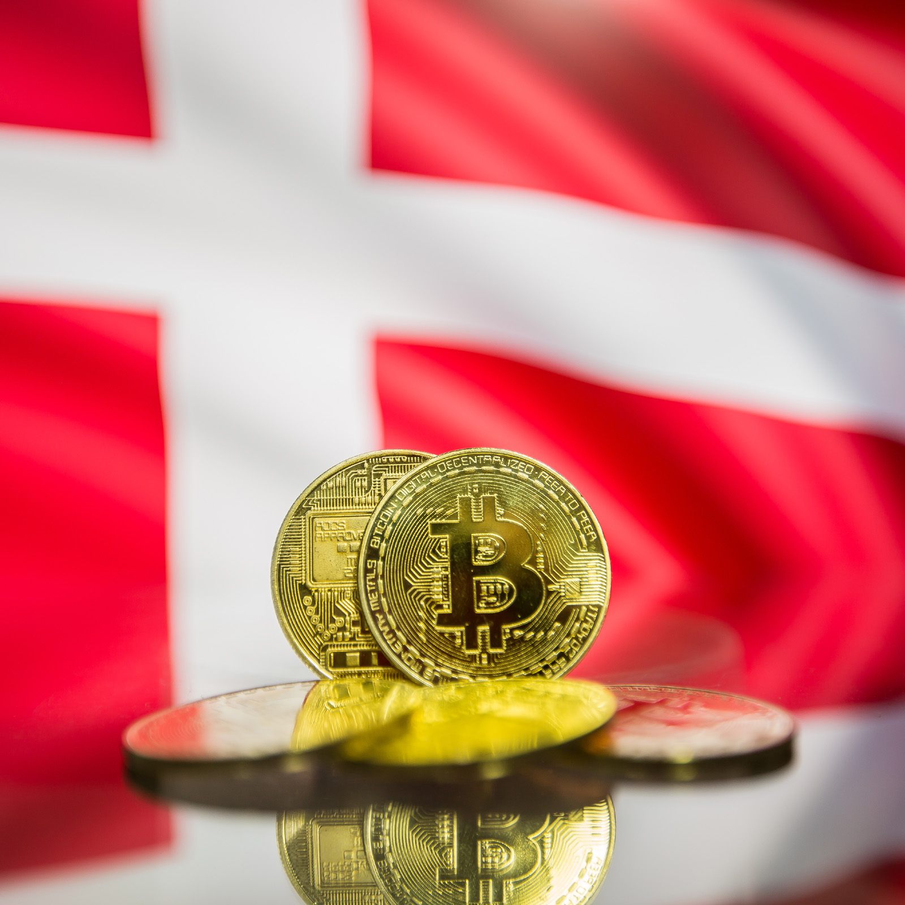
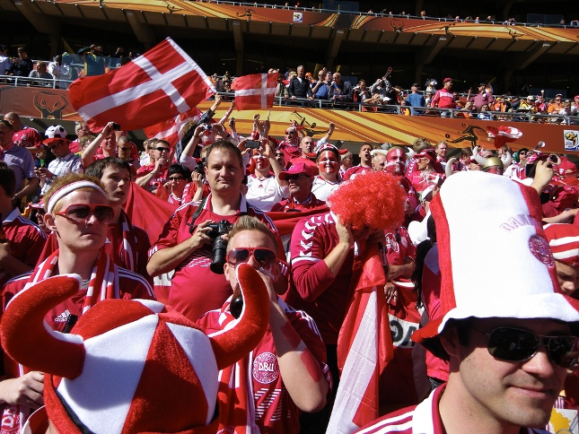
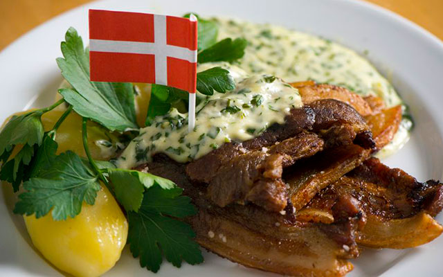
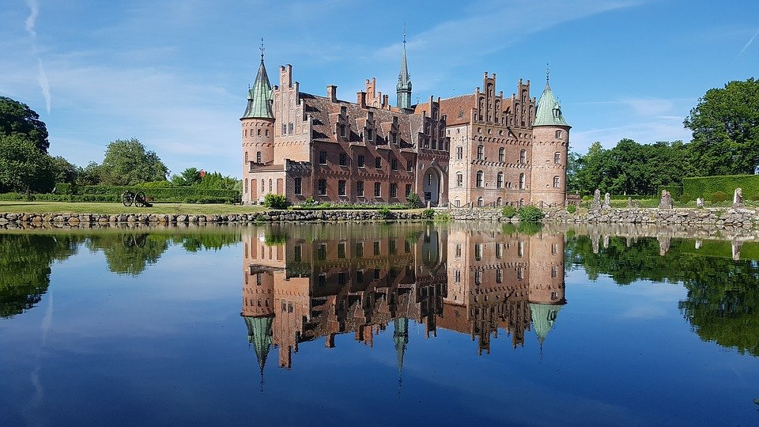
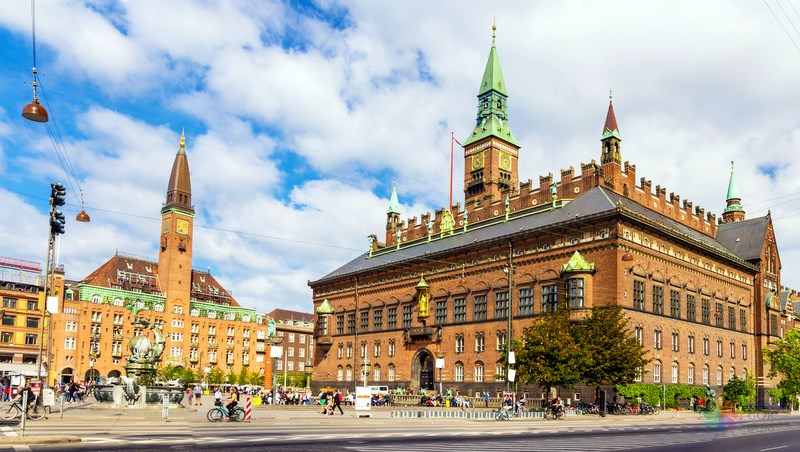

<head>
    <meta charset="UTF-8">
    <meta http-equiv="X-UA-Compatible" content="IE=edge">
    <meta name="viewport" content="width=device-width, initial-scale=1.0">
    <title>Document</title>
</head>
<body>
    
</body>
</html>
<html>
<head>
    <meta charset="utf-8">
    <title>Информация о Дании</title>
    <link rel="stylesheet"  href="dania.css">
    <body>
  
    <h1> Дания </h1>
<h2> География </h2>

<h3> Дания расположена на полуострове Ютландия и островах Фюн, Зеландия, Фальстер, Лолланн, Борнхольм, части Северо-Фризских и др. На юге полуострова Ютландия Дания граничит с Германией и омывается Северным и Балтийским морями; пролив Скагеррак отделяет Данию от Норвегии, а проливы Каттегат и Эресунн — от Швеции. Формально в состав Дании входит самый крупный в мире остров — Гренландия, а также Фарерские острова, однако эти территории пользуются самоуправлением, делающим их почти независимыми.

    Площадь, занимаемая сушей, — 42 394 км²; водой — 700 км². Высшая точка — Идинг-Сковхой (173 м), низшая — Ламмефьорд (−7 м). Протяжённость границ с Германией — 67 км. Протяжённость береговой линии — 7314 км.
    
    Ландшафт страны низменный. Рельеф равнинный со следами оледенения. На западе Ютландии расположены песчаные и моренные равнины, на севере и востоке — холмистый рельеф с грядами морен высотой до 173 м и многочисленными озёрами. Преобладают небольшие реки, наиболее значительная из них — Гудено. На равнине расположены многочисленные небольшие проточные озёра ледникового происхождения.</h3>


<p><h2> Климат </h2>
<h3>  Климат континентальной части Дании умеренный морской. Его смягчает теплое течение Гольфстрим. В зимний период в дневные часы температура воздуха около 0 градусов, в ночные часы отмечаются слабые морозы - до -2 градусов. Летом стоит ясная теплая погода, самым жарким месяцем является июль. Дневные температуры июля - +18..+20 градусов, а ночные - около 11..13 градусов тепла. Среднее годовое количество осадков колеблется от 800 мм на западном побережье Ютландии до 450 мм на побережье пролива Большой Бельт, что на востоке страны. Максимальное количество осадков выпадет в период с июля по октябрь, максимальное их количество приходится на сентябрь (от 90 мм на западе, до 40 мм на востоке)  </h3>
  <div style="text-align:center" > </div></p>


  <h2>Экономика</h2>
<h3>  Большая часть производственных мощностей, ранее располагавшихся в столичном регионе, размещается на западе страны — в западной части Ютландии и на острове Фюн. В 2005 году экспортировалось 58 % произведённой продукции.

    С 1972 года Дания разрабатывает нефтянные и газоносные месторождения в Северном море (всего 19 месторождений). Часть добычи экспортируется. Основными покупателями нефти являлись Швеция и Нидерланды, газа — Германия и Нидерланды. Уголь в Дании не добывается и ввозится из-за границы. Основные экспортёры — ЮАР, Колумбия, Россия, Польша.
    
    Дания является одним из мировых лидеров в использовании возобновляемых источников энергии, в частности энергии ветра. В 2011 году она занимала первое место по доле доходов от использования возобновляемых источников энергии в ВВП страны. Она составляла 3,1 % или 6,5 млрд евро. Дания не входит в Еврозону и имеет собственную валюту — датскую крону. В 2000 году в Дании прошёл референдум по вопросу перехода на евро, но большинство населения 53 % высказалось против, 47 % за. При этом Дания следует рекомендациям Европейского валютного союза и обеспечивает соответствие национальной экономики Маастрихтским критериям. Национальный банк Дании поддерживает фиксированный обменный курс датской кроны к евро.

    На Фарерских островах кроме датской кроны в обращении находится и собственная валюта — фарерская крона. В Гренландии планировалось введение гренландской кроны, однако это предложение было отклонено.</h3>


<p><h2>Население</h2>
<h3>    Население на первый квартал 2020 года — 5 822 763 человека. Крупнейшие города — Копенгаген (1 096 187 чел.), Орхус (219 003 чел.), Оденсе (145 300 чел.), Ольборг (120 059 чел.). Средняя продолжительность жизни — 78 лет у мужчин, 86 — у женщин. Возрастной состав: от 1 до 17 лет — 21,1 %, от 18 до 66 — 65,2 %, старше 67 — 13,7 %. 1 млн учащихся. Более 2 млн семей. Из 100 семей 55 владеют собственными домами.

    Большая часть населения — скандинавского происхождения, малые группы составляют инуиты (или эскимосы, из Гренландии), фарерцы, немцы, фризы и иммигранты. По данным официальной статистики, в 2003 году иммигранты составляли 6,2 % населения. На датском языке говорят на всей территории страны, хотя небольшая часть населения, проживающего на границе с Германией, также говорит на немецком. Многие датчане также хорошо владеют английским, особенно жители крупных городов и молодёжь, которая изучает английский в школах. </h3>
 </p>
     

<h2>Датская Кухня</h2>
<h3> 
     Как и большинство скандинавских стран, Дания обладает своеобразной кухней, достаточно простой, плотной и тяжёлой, основанной на дарах моря и продуктах сельского хозяйства. Высокая калорийность большинства здешних блюд объясняется в первую очередь суровым местным климатом. Мясо и рыба всевозможных сортов, но всегда отменного качества — основа здешней кулинарии.

    Традиционными горячими мясными блюдами являются жареная или запечённая свинина (флескестай), телячьи шницели, маринованная в ананасном соке курица, отбивная говяжья лопатка, жареная печень, свиные рёбрышки в пиве, копчёный бекон, вяленая ягнятина. Кроме этого, популярны в стране всевозможные колбаски, фрикадельки и мясные паштеты.
    
    Популярные местные рыбные блюда и блюда из морепродуктов: всевозможная копчёная, маринованная и солёная рыба, жареная солёная сельдь, рулетики из угря, камбала по-скагенски, салат-коктейль из креветок, крабы. В качестве основного гарнира обычно используются всевозможные овощи, наиболее часто: отварной или запеченный картофель, горячая красная капуста, жареный и маринованный лук. В свежем виде на столе часто присутствуют помидоры, белый редис, огурцы и зелень. В отварном виде в салатах употребляют фасоль, морковь, сельдерей, свёклу, цветную капусту, перец, грибы. Очень любят в Дании разные виды хлеба, особенно хлеб домашней выпечки с различными добавками. Из хлеба готовят суп, и даже кашу с пивом — оллеброд. Почётом пользуются различные производные коровьего и овечьего молока: сыры, молочные супы, кефир, домашний майонез, творог. Особенно популярна пшеничная каша на сливках.
   </h3>

<h5> Достопримечательности </h5>
 <p><h2>Фредериксборг</h2></p>
    <h3>  Фредериксберг — город в области Ховедстаден Дании, является пятым по численности населения городом Дании после Копенгагена, Орхуса, Оденсе и Ольборга (по данным за 2009 год население Фредериксберга составляет 95 029 человек). Своё название Фредериксберг получил от одноимённого дворца, построенного в начале XVIII века. Фредериксберг является предместьем Копенгагена и долгое время рассматривался как неотделимая часть столицы. </h3>
<p><div style="text-align:center" > </div>
</p>

<h2>Копенгагенская Ратуша</h2>
<h3>Копенгагенская ратуша — административное здание, место заседаний Муниципального совета и мэрии Копенгагена.

    Первая (1479) и вторая (1728) ратуши Копенгагена пострадали от городских пожаров 1728 и 1795 гг. соответственно. С 1815 году в Нюторве было построено здание, где кроме городского совета располагался (и до сих пор располагается) суд.
    
    Современное здание ратуши построено в 1893—1905 гг. в центре Копенгагена в стиле «северный модерн» по проекту архитектора Мартина Нюропа, взявшего за основу дворец Палаццо Пубблико в Сиене. Высота часовой башни достигает 105,6 м, это до сих пор одно из высочайших строений города. К ратуше примыкает крупная Ратушная площадь.
    
    </h3>
    <p><div style="text-align:center" > </div>
    </p>

</body>


</head>